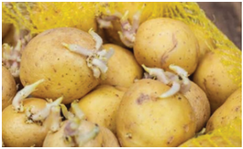
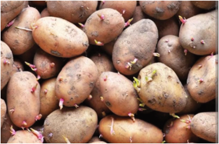

Agriculture for Secondary Schools
Official Seed Certification Agency (TOSCI) include Sagitta, Sherekea, Taurus,
Challenger, Rumba, Rodeo, Panamera, Markies, Manitou, Jelly and Asante. Seek
advice from reliable sources (Agricultural experts, Research Institutions, nearby
farmers, seed sellers, parents, and your teacher) for promising round potato
varieties. Good quality seed potato is of known variety (not mixed with other
types), resistant to diseases, uniformly sized 35-45 mm (chicken egg size), and
well sprouted. Figure 5.2 represents good quality round potato planting materials.
Figure 5.2: Good quality seed potatoes
Activity 5.3
1. Use various learning materials, including the internet, to prepare a summary
that can be used to advise farmers on selecting good-quality seed potatoes.
2. Visit one of the seed potatoes companies or a farmer involved in round potato
seed production, study the procedures applied to produce quality seeds, and
share with your fellow students.
3. Identify which round potato varieties are much more widespread in Tanzania.
4. Find out why the identified potato varieties in 3 above are popular in the
country.
Planting
The appropriate time for planting round potato vary based on altitude and
rainfall patterns. In the Southern Highlands, potatoes are typically planted in
September or October at higher altitudes (above 2000 meters a.s.l.). In the mid-
latitude regions (1500-2000 meters a.s.l.), planting begins after the start of the
rains in November or December, allowing for a second planting in February. In
the Northern Highlands, potatoes are usually planted when moisture conditions
are favourable. The rainfall in this region is divided into two seasons, enabling
73
Student’s Book Form Two